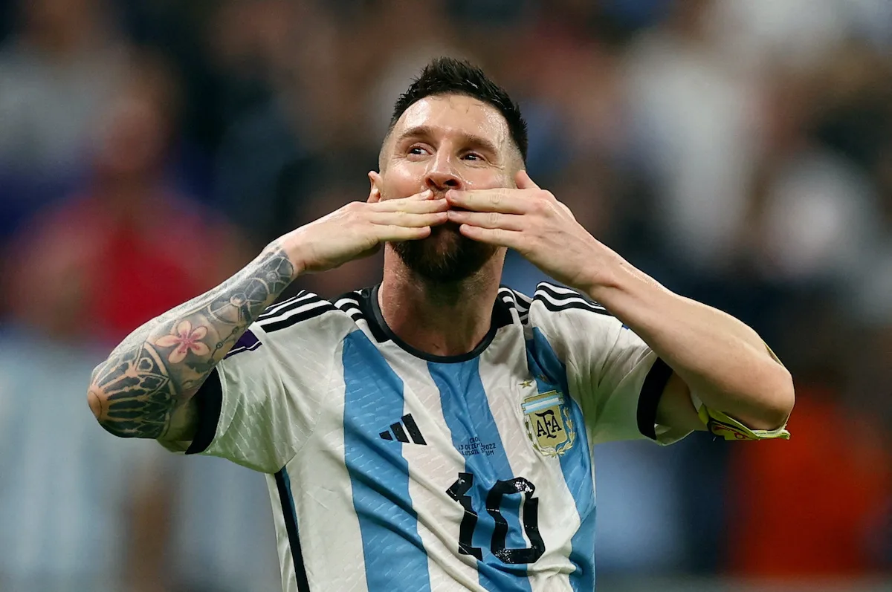

FIFA WORLD CUP
Magical Messi saves his best for last in final FIFA World Cup
DEC 16, 2022 7:10 PM PHT

As if he had not made enough fairy-tales,
Argentina's
Lionel Messi has saved the potentially most magical script
for his last FIFA World Cup - with one line left to write.
With immense pressure on him to match the late great Diego Maradona and send the trophy back to Buenos Aires, Messi has lit up the Qatar tournament while others in the superstar stratum – Neymar and Cristiano Ronaldo – have underwhelmed and gone home.
From Argentina’s opening game until their semifinal win over Croatia, Messi, near the end of his career and at his fifth World Cup aged 35, has been the tournament’s out-and-out star.
His match statistics speak for themselves: 6 starts, 5 goals, 3 assists en route to Sunday’s final against France.